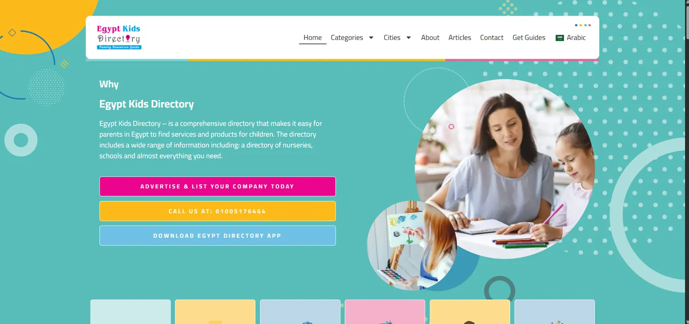

Kids Directory: recovering a local directory after a WordPress migration
Reversing a severe traffic drop for a leading Egypt-based local directory after a platform migration.

- 10.7KClicks3.0× the previous six months (3.55K)
- 480KImpressions1.8× the previous six months (265K)
- 7.6Average positionimproved from 8.1
- 95KSessions in 2026Google Analytics 4, 1 Jan to 9 Nov
Challenge
After the move from custom PHP to WordPress, the site’s performance collapsed. Deep indexing problems, broken permalink structures and data-mapping conflicts left its organic presence close to zero.
Approach
I ran a technical recovery plan: precise 301 redirect mapping to carry over historical authority, and fixes for WordPress crawl errors. I then rebuilt the directory’s internal linking structure, updated the local content strategy for the Egyptian market, and rebuilt the backlink profile with GEO and AEO improvements.
Results
Search Console shows 10.7K clicks in the last six months against 3.55K in the six months before, and 480K impressions against 265K. Average position moved from 8.1 to 7.6 and click-through rate from 1.3% to 2.2%. Google Analytics 4 recorded 95K sessions between 1 January and 9 November 2026, including about 3.6K from ChatGPT. Google’s AI Overview cites the directory for “the best schools in Maadi”, and ChatGPT cites it in answers about schools in Rehab City.
Search performance
Search Console, last 6 months compared with the previous 6 months.
Recommended by AI
Google AI Overview: “The best schools in maadi”. ChatGPT: schools in Al Rehab City, citing Kids Directory.
Behaviour and traffic
Google Analytics 4: 95K sessions, with ChatGPT among the top sources. Microsoft Clarity: 54,241 sessions in 300 days. Clarity smart events: outbound clicks and Contact us.